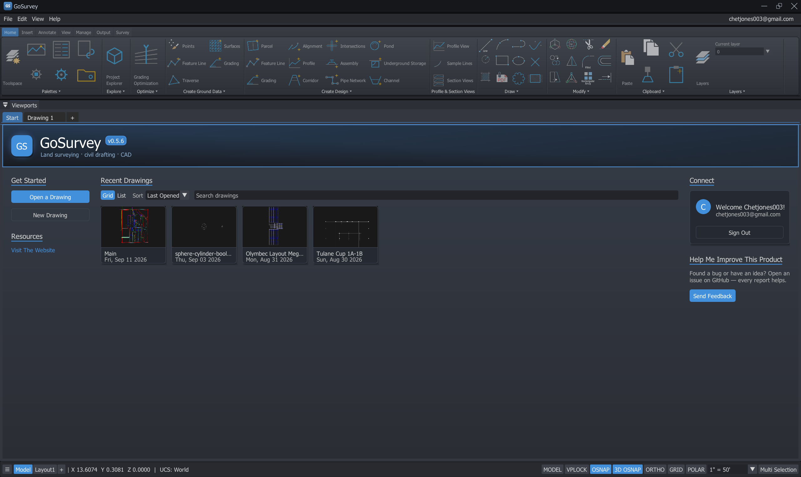
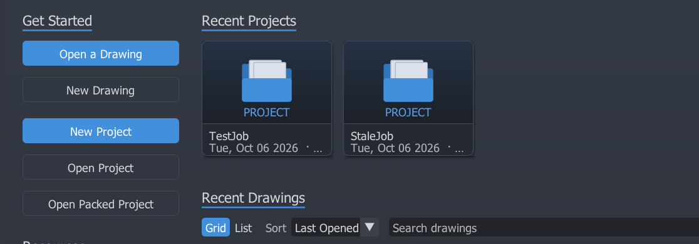
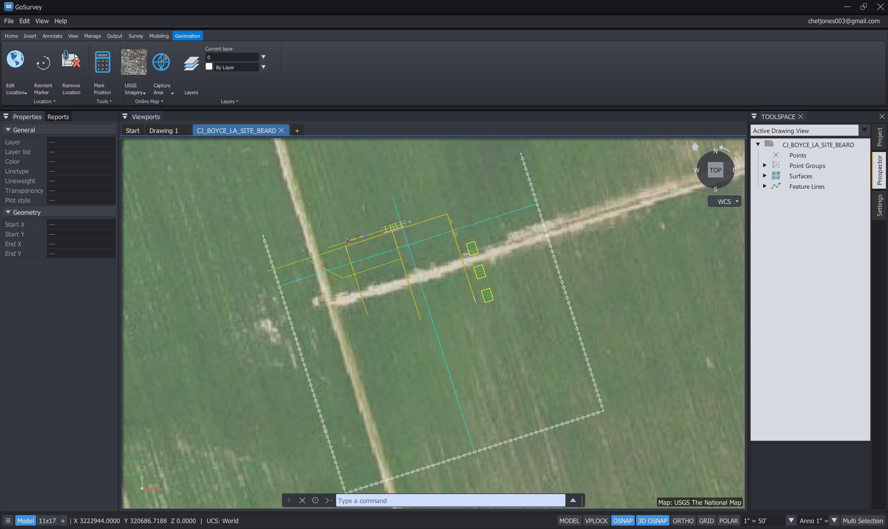
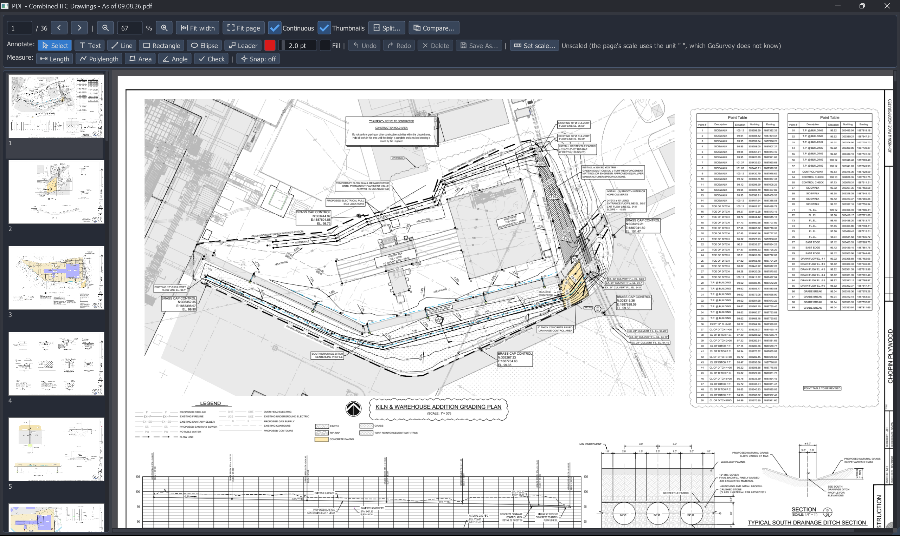
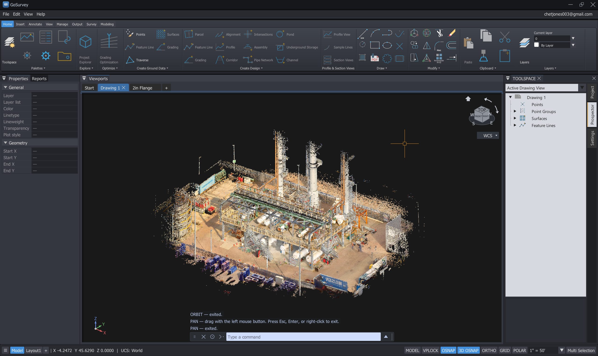
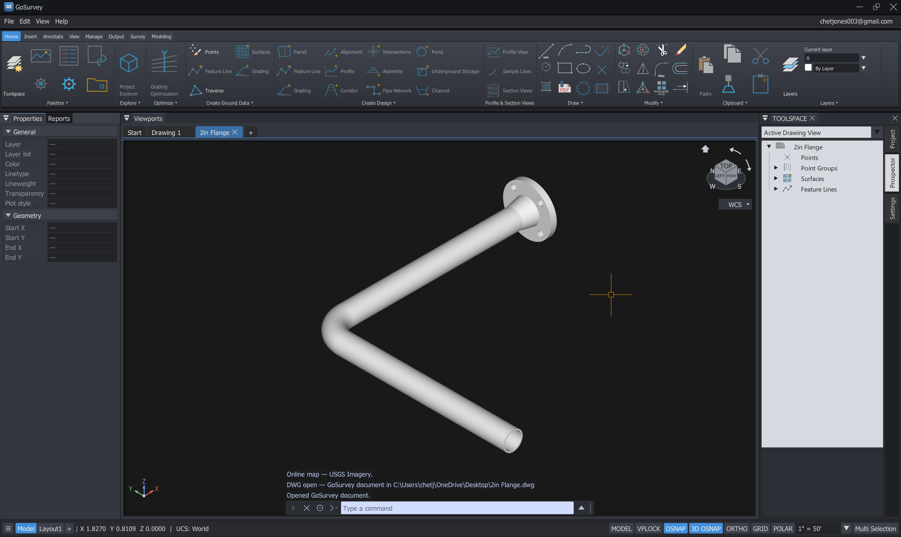
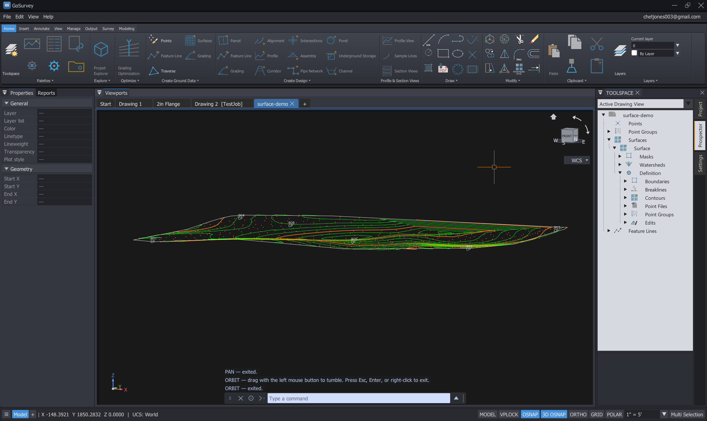

Projects
- Shared survey point database across project drawings
- Recent Projects on the start screen
- Pack and email the whole project
A fast, modern CAD platform built for surveyors — bearings and distances, traverse adjustment, points, surfaces, and plottable sheets.

Six highlights from What’s New 0.7.0 — swipe, arrow keys, or the controls below.






Once installed, GoSurvey checks for new versions itself and asks before installing anything. Choose your channel in Settings → System → Updates.
Tested releases. This is the one to install if you are doing real work.
Windows may warn that the publisher is unrecognised — the installer is not code-signed yet. Choose More info → Run anyway. A SHA-256 checksum is published with every release.
The next release, published as it is built. Real working builds, but this is where problems are still being found — keep backups of drawings you care about.
Already running GoSurvey? Turn on Include beta releases in Settings instead of downloading by hand.
No beta build is published at the moment — the stable release above is the current one.
Live release details could not be loaded just now. Browse all releases on GitHub →
Download the installer above and run it. GoSurvey installs to Program Files and adds a Start Menu entry. If it will not start, install the Microsoft Visual C++ Redistributable for x64.
Run UNITS once and pick the precision and bearing format you work in — surveyor's bearings, DMS or decimal. Every readout and label follows it.
Import points from a PNEZD CSV, linework from DXF, or raw observations from an FBK file into the Traverse Editor. Either order keeps your points.
GoSurvey is free to install, but your browser or Windows may flag the download because the installer is not code-signed yet. Those warnings are normal — follow the steps below and you can install safely.
Click Continue download below. Your browser saves a file named like GoSurvey-…-Installer.exe.
Chrome and Edge often flag an unsigned .exe with This file isn’t commonly downloaded and may discard it. Press Ctrl+J to open Downloads, find the file, and choose Keep or Keep anyway. If it was removed, open the release on GitHub, download GoSurvey-…-Installer.exe from Assets, and choose Keep when the browser warns again.
Windows may show Windows protected your PC or say the publisher is unrecognised. Click More info, then Run anyway.
Right-click the .exe, choose Properties, check Unblock at the bottom, click OK, then run it again.
Follow the setup wizard. Windows may ask for permission to install to Program Files — choose Yes. GoSurvey adds a Start Menu entry when finished.
Install the Microsoft Visual C++ Redistributable (x64), then run GoSurvey again.
Every release publishes a SHA-256 checksum on GitHub so you can verify the file was not altered in transit. The checksum proves integrity; it does not remove the SmartScreen prompt.
Need help after installing? See the manual or report an issue.